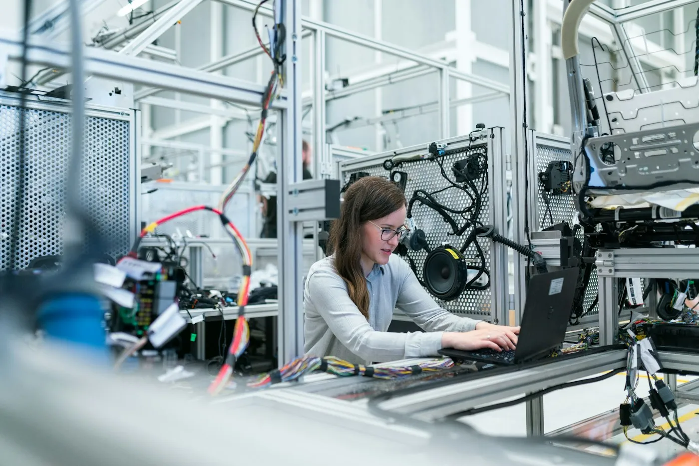
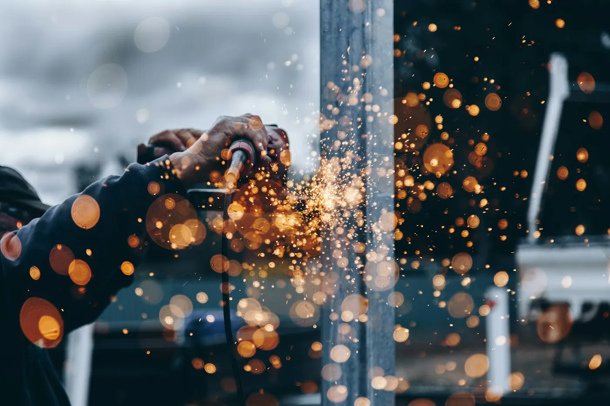
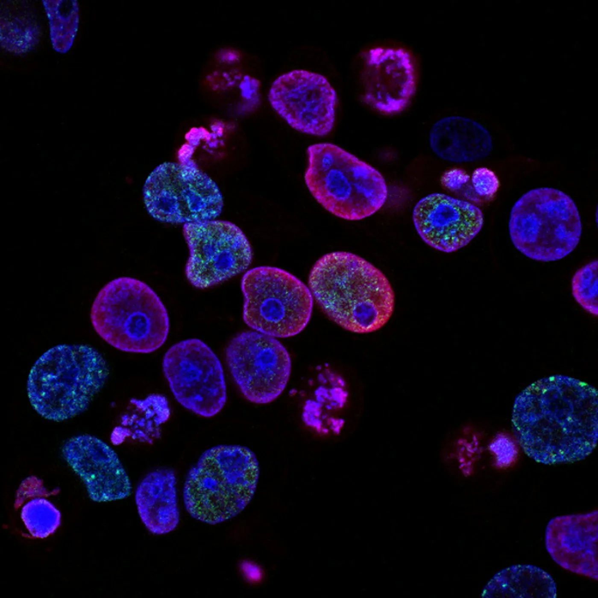
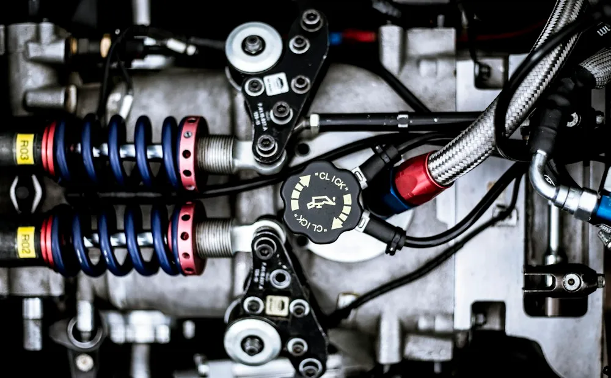

ENGINEERING A SAFER
DISTANCE TO THE TASK.
Telodynamic focuses on remote handling, shielded environments, maintenance support and application-specific equipment solutions.
Practical engineering for demanding environments.
Remote-handling equipment and shielded enclosures allow work to take place where direct access is limited. Telodynamic brings its focus to the equipment and service needs of these environments.
Start with the operating context, the condition of the equipment and the intended outcome. These details help frame a useful technical conversation.
Bring the requirement. Start the conversation.
Whether you need maintenance, repair, product information or a custom solution, describe your application and the constraints that matter.
Equipment type, symptoms and service history provide a practical starting point for discussing the next step.
Discuss your applicationAcross the working environment.
Engineering and research photography carried forward from the original website.




FROM ASSESSMENT TO
RELIABLE OPERATION.
Explore the stages of an equipment service discussion. The scope and verification requirements depend on the application.
Inspect
Assess equipment condition, symptoms, service history and the operating context.
A practical starting point.
Application-Focused Solutions
Define the operating requirement, environment and intended outcome.
Maintenance & Repair Focus
Discuss the condition of the system and the work it needs.
Custom Engineering Capability
Explore application requirements when standard options do not fit.
Clear Requirements
Bring the available equipment information and constraints to the discussion.